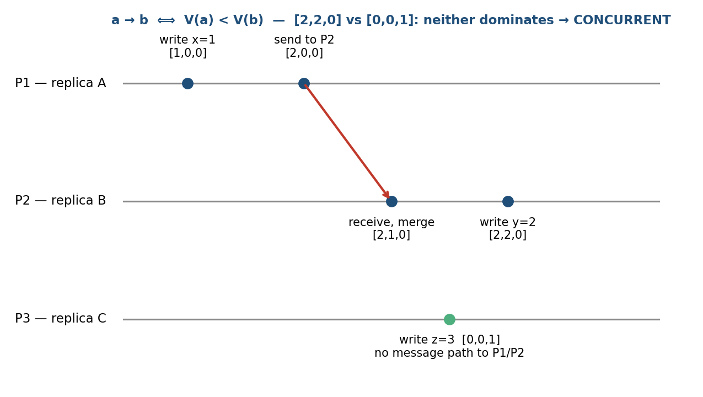
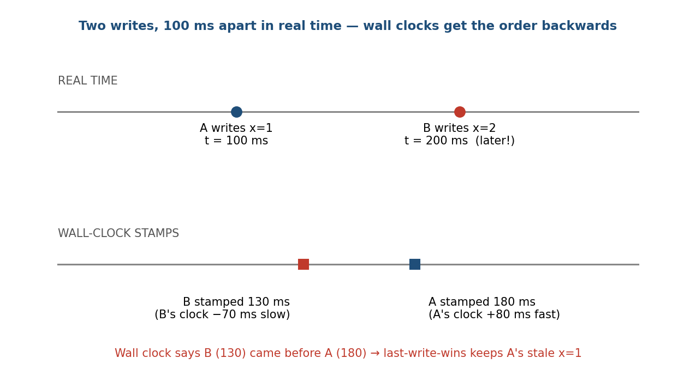
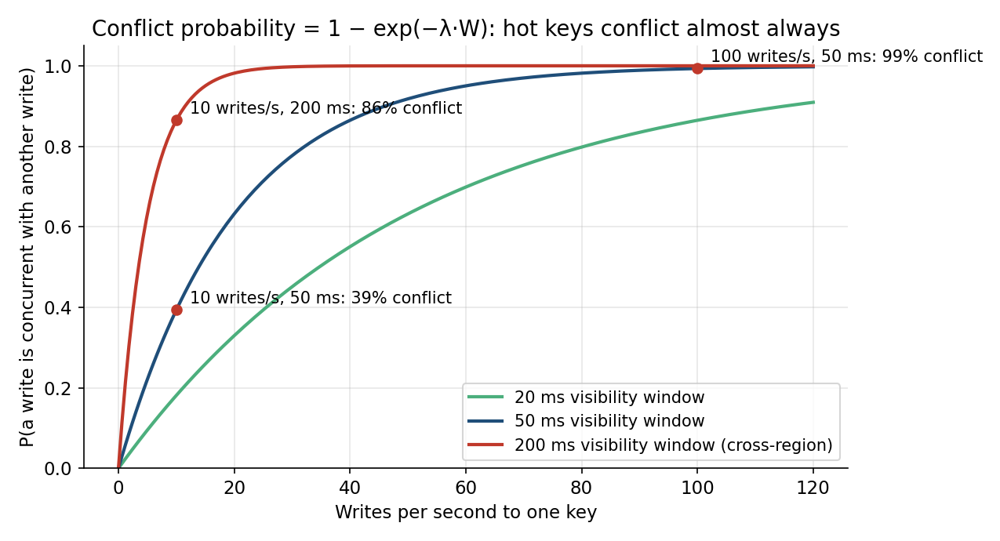
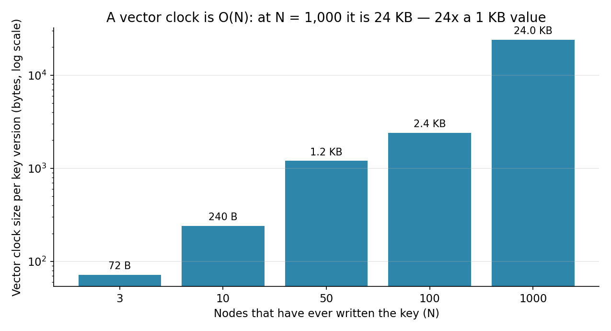

Part 5 gave you the escape hatch for overload: shed fast, or the queue eats you. This part is about a quieter failure — two replicas that disagree about what happened first, and a database that silently deletes one user's write because it trusted a clock. The benchmark hook is a probability, not a latency: take two servers whose clocks drift by the ordinary ±100 ms that NTP leaves behind, and write to the same key 50 ms apart in real time. The wall clock gets the order wrong 28% of the time. Not 28% under adversarial conditions — 28% on a normal day, with normal clocks, for writes a twentieth of a second apart. And when the order is wrong, last-write-wins throws away the newer write, reports success, and never tells anyone. The fix is not a better clock. The fix is to stop asking clocks what happened, and start asking causes.
The ELI5 version
Three friends share a grocery list on a whiteboard. Alice writes "milk" at 10:00. Bob, who has not seen the whiteboard since 9:55, writes "eggs" at 10:01 — from his phone, from a different store. Carol sees both and writes "milk, eggs" at 10:02.
Now imagine Alice and Bob both edit at the same moment, neither having seen the other's edit. Alice's phone says 10:00:00, Bob's says 10:00:01, so the app keeps Bob's list and deletes Alice's milk. But Bob's phone clock was running 80 milliseconds fast and Alice's 70 slow — Alice actually wrote after Bob. The app picked a winner using two clocks that disagreed by 150 milliseconds, and the milk is gone.
A vector clock is the whiteboard keeping a tally instead of a timestamp. Next to each item it records who has seen what: "Alice has written twice, Bob once, Carol zero times." When Carol's edit arrives with a tally that includes Alice's and Bob's, the whiteboard knows it came after both. When Alice's and Bob's tallies each include things the other has never seen, the whiteboard knows they happened at the same time — and it keeps both lists instead of deleting one. The tally never asks what time it is. It only asks: did this writer see that writer's work?
How it works: happens-before
Leslie Lamport's 1978 paper defined the only ordering that matters in a distributed system, and it has nothing to do with clocks. Event a happens-before b (written a → b) if one of three things is true:
- Same process: a and b happened on the same machine, and a came first.
- Message: a is the sending of a message and b is the receiving of it.
- Transitivity: a → c and c → b, so a → b.
If neither a → b nor b → a, the events are concurrent (a ∥ b) — genuinely unordered. No amount of clock precision changes that, because concurrency is a fact about information flow, not about time. Two events are concurrent exactly when no chain of messages connects them.

Lamport also gave the first clock for this ordering: one counter per process. On a local event, increment; on receiving a message, take the max of your counter and the sender's, then increment. The guarantee is one-way: if a → b, then L(a) < L(b). The converse fails, and the failure is the whole problem. The notebook runs the demo: two events on two machines that never exchanged a message both get Lamport stamp 1 — and a genuinely ordered pair can get stamps 1 and 2, the exact same shape of numbers. A scalar clock can put every event into an order that never contradicts cause and effect, but it cannot tell you which pairs were simultaneous. And simultaneous is exactly where conflicts live.
Vector clocks (Fidge 1988, Mattern 1989) fix this by replacing the single counter with one counter per node. Each process i keeps a vector V of length N, and the rules are the same shape as Lamport's:
- Local event at node i: V[i] += 1.
- On receiving a message carrying vector W: V[k] = max(V[k], W[k]) for every k, then V[i] += 1.
The comparison rule is component-wise: V(a) < V(b) if every entry of a is ≤ the matching entry of b, and at least one is strictly less. Then the guarantee runs in both directions:
a → b ⟺ V(a) < V(b)
If neither vector dominates the other — one is ahead in some entry and behind in another — the events are concurrent, and the clock has proved it. In the diagram above, [2,2,0] and [0,0,1] are incomparable: the first is ahead in entries 1 and 2, the second ahead in entry 3. Nobody has to guess. The clock says: these two writes never saw each other.
Why wall clocks fail: the 28% number
The obvious way to order two writes is a timestamp: keep the newer one. That is last-write-wins, and it is what many systems do by default — Cassandra, for example, resolves conflicting writes per column by timestamp. It breaks for a reason that has nothing to do with your code: server clocks drift. Two machines in the same data center routinely disagree by tens of milliseconds; NTP corrections can move a clock backwards; virtual machines are worse.
The diagram is a concrete case: node A's clock runs 80 ms fast, node B's runs 70 ms slow — 150 ms of total skew, entirely ordinary. A writes x=1 at real time 100 ms and gets stamped 180. B writes x=2 at real time 200 ms — genuinely later — and gets stamped 130. The wall clock says B came first, so last-write-wins keeps A's stale x=1 and discards B's newer write. No error, no log line, no conflict to resolve. The data is just gone.

The simulation in the notebook generalizes it. With each node's clock skewed uniformly in [−100, +100] ms, the probability that the wall clock mis-orders two writes depends only on how far apart they are in real time:
- 10 ms apart: mis-ordered 45% of the time — nearly a coin flip.
- 50 ms apart: mis-ordered 28% of the time.
- 100 ms apart: mis-ordered 13% of the time.
- 200 ms apart: mis-ordered 0% — the gap finally exceeds the maximum possible skew.
The rule of thumb: any two writes closer together than twice your worst clock skew are unordered by wall clock, full stop. If your skew is ±100 ms, that is a 200 ms window in which timestamps are noise. And the failure is silent by construction — last-write-wins cannot report a conflict it cannot see.
What a vector clock does with a conflict
A vector clock detects the conflict; it does not resolve it. That distinction is the point. Once the clock proves two versions are concurrent, the system has three options:
- Keep both as siblings. The next read returns both versions, and the application merges them. Amazon's Dynamo paper (2007) describes exactly this for shopping carts, where the merge is the union of the items — a cart that never loses an item. Riak exposed the same siblings to its clients. The cost is complexity pushed to the application: somebody has to write the merge.
- Merge automatically with a CRDT. If the value is a set, a counter, or another conflict-free replicated data type, the merge rule is built into the type and no application callback is needed. (Season 3, Part 10 comes back to CRDTs.)
- Apply a deterministic tiebreak. Pick the version with the higher node ID, or the higher timestamp — but now it is an explicit, documented choice made after detecting the conflict, not an accident of clock skew. If you are going to lose data, lose it on purpose, with the trade-off written down.
What you cannot do is pretend the conflict did not happen. That is what last-write-wins does, and it is the only option that is never correct by design.
The conflict math: hot keys conflict almost always
Conflicts are a rate problem, not a bug. A write to a key conflicts when another write to the same key lands inside the visibility window W — the time before the first write has reached the other replicas. With writes arriving as a Poisson process at rate λ per second, the probability is:
P(conflict) = 1 − exp(−λ·W)

Read the curve, not the formula. At 1 write a second per key with a 50 ms window, only 5% of writes conflict — rare enough to ignore, which is why most keys never show a sibling. At 10 writes a second, 39% conflict. At 100 a second, 99% — effectively every write is concurrent with another. And the window matters as much as the rate: the same 10 writes a second across regions, where replication takes 200 ms instead of 50, conflicts 86% of the time. The expected number of siblings per read is 1 + λ·W, so that hot key at 100 writes a second carries about 6 versions on a typical read.
The interview version of this: if you design a Dynamo-style store and the interviewer asks what happens to a hot key, the answer is not "it works" — it is "at 10 writes a second, two in five writes return siblings, and the application merges them; at 100 a second, the sibling list is the steady state, so either the merge is cheap or the key needs a leader." A system that accepts writes on multiple replicas without coordinating first has chosen this arithmetic. The vector clock just makes the choice visible.
The size cost: O(N) per key, forever
The clock's one real weakness is size. A vector has one entry per node that has ever written the key, and each entry is a counter plus a node identifier — 24 bytes in the notebook's accounting (8-byte counter, 16-byte node ID). The cost grows linearly with N:

At N = 3 the clock is 72 bytes — noise. At N = 10 it is 240 bytes, and a million keys carry 240 MB of clocks alone. At N = 1,000 the clock is 24 KB per key version — 24 times a 1 KB value. In a system with node churn, where the set of writers keeps growing, the vector grows without bound, and it travels with every read and write.
The practical answers, in order of how often they are used:
- Version vectors, not vector clocks. Attach the vector to the data, with one entry per replica that coordinates writes to the key — not one entry per client, and not one entry per event. The replica set is small and fixed; the client set is not. This is the variant Dynamo actually used.
- Dotted version vectors. Give each sibling its own single "dot" (one counter) instead of a full vector, so the size tracks the number of siblings, not the number of nodes. Riak moved to these after its original vector clocks produced sibling explosion — stale contexts piling up versions that should have been replaced.
- Prune by timestamp. Drop entries for nodes that have not written recently, bounded by a timestamp. This reintroduces a small correctness risk if a pruned entry is revived, so it is a documented trade-off, not a free lunch.
- Coordinator per key. Route all writes for a key through one coordinator, which keeps the vector to the replica set. You are most of the way to a leader at that point — which is why strongly consistent stores skip vector clocks entirely and use a log instead (Part 2's Raft).
One more thing the size chart hides: comparison is O(N) too, but N is small in practice and the comparison is a handful of integer compares. The size is the cost that bites, not the CPU.
The decision ladder
- Never order cross-machine events by wall clock. If two writes can land within twice your worst clock skew — 200 ms at ±100 ms — their timestamps are noise. Use a logical clock.
- Use a Lamport scalar when you need a cheap total order and don't need to detect concurrency. Raft's log index is exactly this: one order, consistent with causality, no conflict detection required.
- Use a vector clock (or version vector) when two replicas can both accept writes and you must tell "after" from "at the same time." That is the Dynamo/Riak case, and the clock's if-and-only-if guarantee is what makes siblings safe to return.
- Design the merge before you ship the clock. A sibling the application cannot merge is just last-write-wins with extra steps. If there is no meaningful merge, use a CRDT or accept explicit LWW — and write the data loss down.
- Bound the clock. Version vectors per replica set, dotted version vectors per sibling, or pruning by timestamp. An unbounded vector is a slow memory leak with a correctness story attached.
Why it breaks
The silent overwrite is the failure that ships. Last-write-wins on a wall clock looks like a decision procedure and behaves like one — until you measure it. At ±100 ms of ordinary skew, more than one in four write pairs 50 ms apart get their order flipped, and the loser is deleted with a success response. The system does not know it lost data, the client does not know it lost data, and the first person to notice is the user whose item vanished from the cart. A vector clock does not make conflicts go away. It makes them visible, and visible conflicts get merged while invisible ones get deleted. The next part — gossip protocols — moves from ordering events to spreading them: how a thousand nodes learn what happened without anyone telling them all at once.
Takeaways
- Wall clocks cannot order events across machines: ±100 ms of ordinary skew mis-orders ~28% of write pairs 50 ms apart in real time, and 45% at 10 ms apart. Last-write-wins on a wall clock is silent data loss with a timestamp on it.
- Lamport's scalar clock gives a total order consistent with causality, but it cannot distinguish "happened after" from "happened at the same time." A vector clock can: a → b ⟺ V(a) < V(b), in both directions.
- Conflicts are a rate problem: P(conflict) = 1 − exp(−λ·W). At 10 writes/s per key with a 50 ms visibility window, 39% of writes are concurrent; at 100/s it is 99%. Hot keys conflict almost always — design the merge, don't hope it won't happen.
- The clock costs O(N) per key version: 24 KB at N = 1,000, which is 24x a 1 KB value. Version vectors, dotted version vectors, and pruning by timestamp keep it bounded.
- A vector clock detects a conflict; it does not resolve one. Resolution is the application's job (merge the siblings), a CRDT's job (merge built into the type), or an explicit, documented last-write-wins — never an accident.
Honesty note: all simulation numbers are this machine's toy-model measurements, not production telemetry; the Lamport/vector-clock rules and the Dynamo/Riak history are the published results cited in the text. No Meta content, per standing exclusion.
Companion notebook: vector_clocks_causality.ipynb — the vector-clock simulation (events, merge, compare), the Lamport indistinguishability demo, the wall-clock mis-ordering Monte Carlo, the conflict-probability math with Monte Carlo cross-check, and the size-cost arithmetic. All cells exec-tested.
Next in the series: Season 2, Part 7 — Gossip Protocols. Follow danielsamfdo on dev.to for the next part.